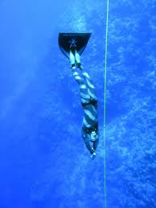

O freedivingu
Co je freediving?
 Freediving, nebo také volné potápění je sport, ve kterém se potápíme bez použití dýchacího přístroje.
Bazénový freediving
V bazénu buď staticky zadržujeme dech a snažíme se vydržet conejdéle ( světový rekord je přes 11 minut), nebo plaveme na jeden nádech co nejdál, buď s ploutvemi, monoploutví, nebo bez ploutví.
Hloubkový freediving
Při potápění do hloubky jde o to, jak hluboko se člověk potopí s ploutvemi, monoploutví, bez ploutví, nebo pomocí ručkování po laně.